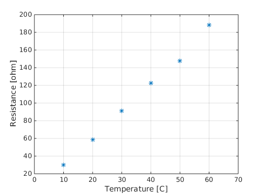
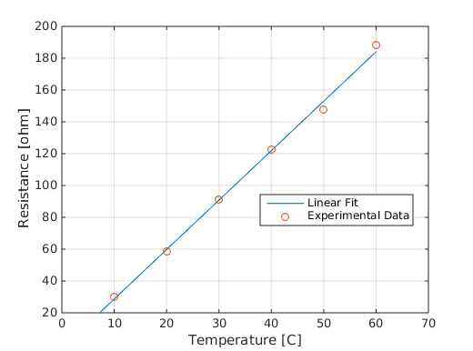
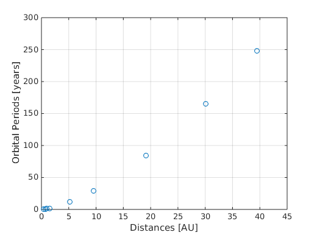

Contents
Fitting Linear Data
Let's say we're doing an experiment in which we collect the values of resistance for a piece of equipment at different temperatures:
temperature = [10, 20, 30, 40, 50, 60]; resistance = [30.2, 58.5, 91.2, 122.6, 147.6, 188.0];
Once we have the data, we plot it:
plot(temperature, resistance, '*') xlabel('Temperature [C]'); ylabel('Resistance [ohm]'); grid axis([0, 70, 20, 200])
Looking at the plot, we can assume that a linear relationship exists between the temperature and resistance. This means that we can draw a line such that it passes through all the data points (or atleast comes very close to doing that).
The equation of this line is:

Where  and
and  are some unknown coefficients.
are some unknown coefficients.
MATLAB has a polyfit function, that lets us determine the coefficients and of a line that best fits some given data.
In our case, our data is in temperature and resistance:
coefficients = polyfit(temperature, resistance, 1); b = coefficients(1); a = coefficients(2);
Now that we have and , we can make a plot of our function  . To make a plot of the function, we'll create a vector T such that it contains lots of points in the range we are interested in: (0-60 degrees Celsius):
. To make a plot of the function, we'll create a vector T such that it contains lots of points in the range we are interested in: (0-60 degrees Celsius):
T = 0:1:60;
Then, we'll evaluate the corresponding R:
R = a + b*T;
Now we'll plot that function, and also plot the original data over it, so that we can confirm that the funcion indeed fits the data:
% plot the function: plot(T, R, '-') hold on % plot the data: plot(temperature, resistance, 'o') xlabel('Temperature [C]'); ylabel('Resistance [ohm]'); grid axis([0, 70, 20, 200]) legend('Linear Fit', 'Experimental Data', 'Location', 'Best') hold off
Now you know how to fit a line to some data. But what if the data is such that you can't fit a line through it? What if the function that best fits the data is something other than  ? In the section below, we'll see how to fit some data with another function, of the form
? In the section below, we'll see how to fit some data with another function, of the form  .
.
Kepler's Third Law
... tells us that the orbital period of a planet - i.e., the time it takes to complete one revolution around its star, is proportional to its distance from that star raised to the power 1.5. Elegantly put:

Where  is the orbital period of the planet, and
is the orbital period of the planet, and  is the distance to the star.
is the distance to the star.
We'll verify Kepler's law for the planets of our own solar system, using some real data:
http://www.astronomynotes.com/tables/tablesb.htm
Our approach will be as follows:
1. Plot the raw data points on MATLAB
2. Assume that this data can be fit using a power law, of the form 
3. Use MATLAB's polyfit function to determine the coefficients a and b
4. Verify that b is 1.5
5. Plot the resulting function  , and verify that the data points fall on this curve.
, and verify that the data points fall on this curve.
First, let's enter and plot the data:
distances = [0.387,0.723, 1.000, 1.524, ... 5.203, 9.537, 19.191, 30.069, 39.482]; orbital_periods = [87.969/365.0, 224.701/365.0, 1.0, 686.98/365.0, ... 11.862, 29.457, 84.011, 164.79, 247.68]; plot(distances, orbital_periods, 'o'); grid axis([0, 45, 0, 300]) xlabel('Distances [AU]') ylabel('Orbital Periods [years]');
We'll assume that these points can be fit by a function of the following form:
Where is the orbital period, and is the distance of each planet. We don't know the values for and in this function; for that, we'll have to do a little math, and use polyfit.
Taking  on both sides of our function, we have:
on both sides of our function, we have:

Now, let's say:

 and
and

then we have:

This means that  are
are  are related linearly. In fact, if we plot the log of the orbital periods v/s the log of the distances, we'll see that they fall in a straight line!
are related linearly. In fact, if we plot the log of the orbital periods v/s the log of the distances, we'll see that they fall in a straight line!
plot(log(distances), log(orbital_periods), '-o') grid axis([0, 4, 0, 8]) xlabel('log(Distances)') ylabel('log(Orbital Periods)')

The coefficients that describe this line are  and , and we can use polyfit to determine them:
and , and we can use polyfit to determine them:
coefficients = polyfit(log(distances), log(orbital_periods), 1); b = coefficients(1); A_L = coefficients(2);
But for our function, we need , not . Since is just  , we can get as:
, we can get as:
a = exp(A_L);
Now we have both the parameters for our function . Let's plot this function:
r = 1:0.1:40; T = a*(r.^b);
plot(distances, orbital_periods, 'o') hold on plot(r, T, '-'); grid axis([0, 45, 0, 300]) legend('Actual data', 'Fitted function', 'Location', 'Best') hold off
So our function fits the data quite well. Further, let's have a look at its coefficients:
disp(a) disp(b)
1.0006
1.4995
Which means, that the fitting function, is roughly:

So, we're able to confirm, as Kepler theorized more than 400 years ago, that the orbital period of a planet is indeed proportional to its distance from the star raised to 1.5. Science is awesome.
And here's a bad picture I took of Jupiter through my telescope!